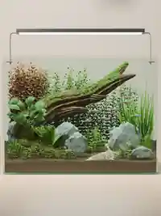
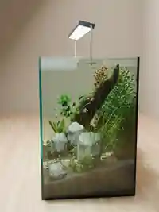
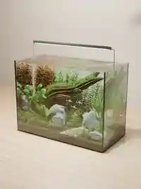

3D reconstruction / 2026
Life
under glass.
从一张参考照片出发，以 Blender 原生网格、程序化材质和 Cycles 光线追踪重建微型水下生态。玻璃、水体、沉木、水草、岩石与游鱼均为独立三维对象。
MODELBlender 5.2RENDERCycles / OptiXOUTPUT1536 × 2048
探索三视角 ↓
Rendered viewpoints
Three perspectives.


图像来自 Blender 工程的真实渲染；页面为静态作品展示，并非可实时操作的三维场景。
Behind the scene
Built in geometry.
鱼缸使用独立玻璃与水体网格，场景由 Python 脚本组合生成。植物由曲面叶片组成，鱼群包含独立的身体、鱼鳍与眼睛，并非以照片平面替代。
本作品是一张参考图的推断性重建。缸体纵深、被遮挡结构与真实灯光参数无法从单张图片唯一确定，局部造景不保证与原图完全一致。
查看 GitHub 仓库 ↗- Glass & WaterRefraction / Absorption
- HardscapeWood / Stones / Substrate
- VegetationProcedural meshes
- FishIndependent geometry
- LightingArea lights / Cycles